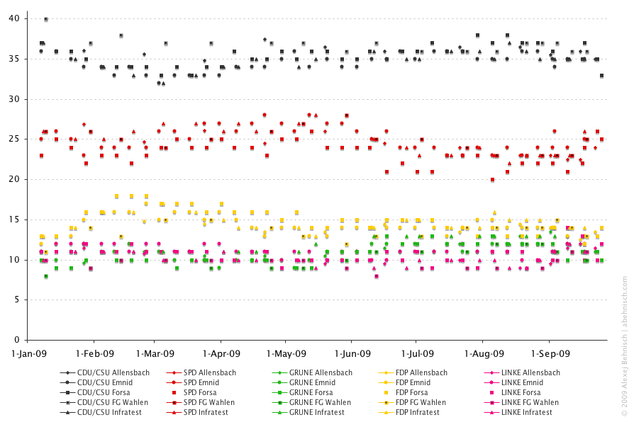
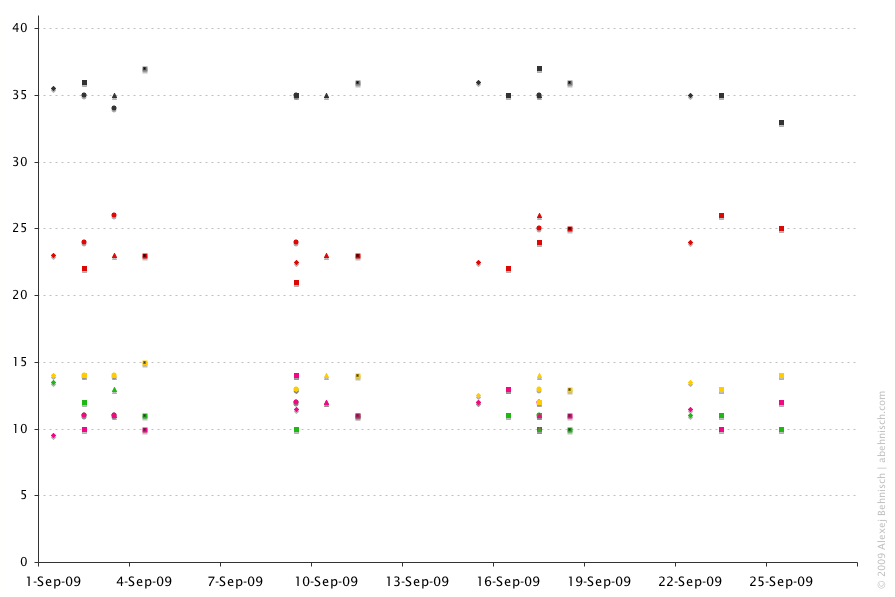
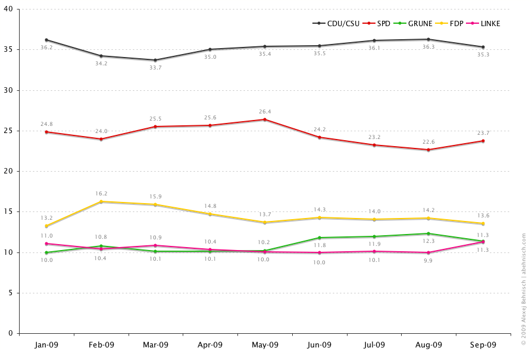
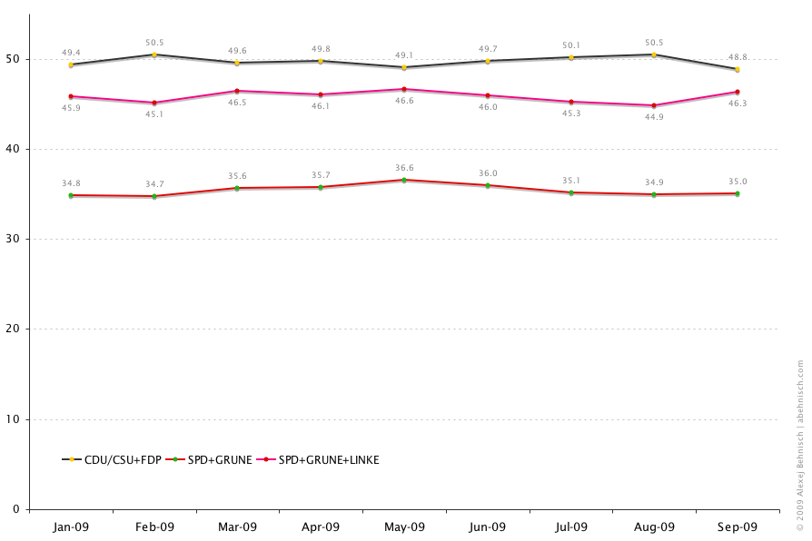
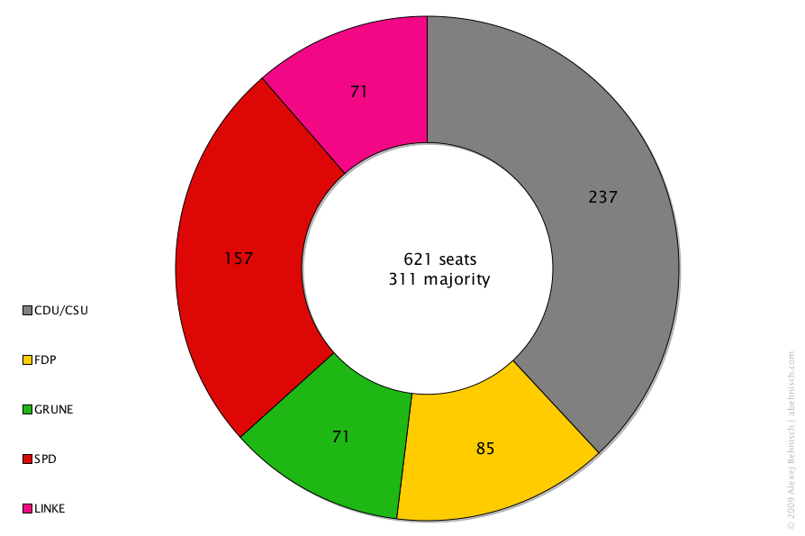
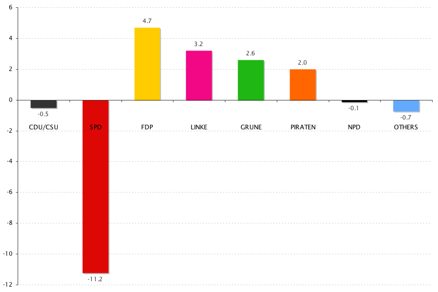
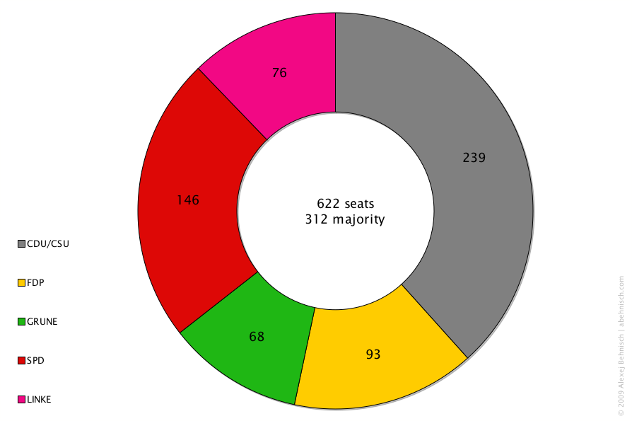

Alexej Behnisch | Back to abehnisch.com home page | Last updated 1 October 2009
Figure 1: Individual data points from each pollster, percentage of secondary vote (Zweitstimme)
Special Focus: The last month until 27 September 2009 (detail from figure 1)
Figure 2: Monthly composite of vote share, calculated from average of all five pollsters
Figure 3: Likely coalition scenario, based on monthly polling average (see above)
Figure 4: Last six election results, 1990-2009

Figure 5: Projection of parliamentary seats in next Bundestag, 25 September 2009
Note: My own calculation.
598 regular seats calculated based on September average poll of secondary votes (see above).
Uberhangmandate or extraordinary seats estimated by election.de (currently +15 for CDU/CSU and +8 for SPD).
- Angela Merkel CDU certain to remain chancellor
- Coalition partner uncertain: FDP or SPD?
- Unconstitutional Uberhangmandate likely to decide
Figure 6: Percentage of secondary vote (Zweitstimme)

Figure 7: Gains and losses to 2005 result, percentage points
Figure 8: Parliamentary seats in new Bundestag
Poll Data: Germany's five leading pollsters: Allensbach, Emnid, Forsa, Forschungsgruppe Wahlen, Infratest dimap
Sources: Wahlrecht.de (polling data), Bundeswahlleiter (official election results)
Related blog post: For how many does Merkel speak? (on the political legitimacy of the election result)
Contact: Email behnisch[at]gmail.com
Back to abehnisch.com home page | Last updated 1 October 2009